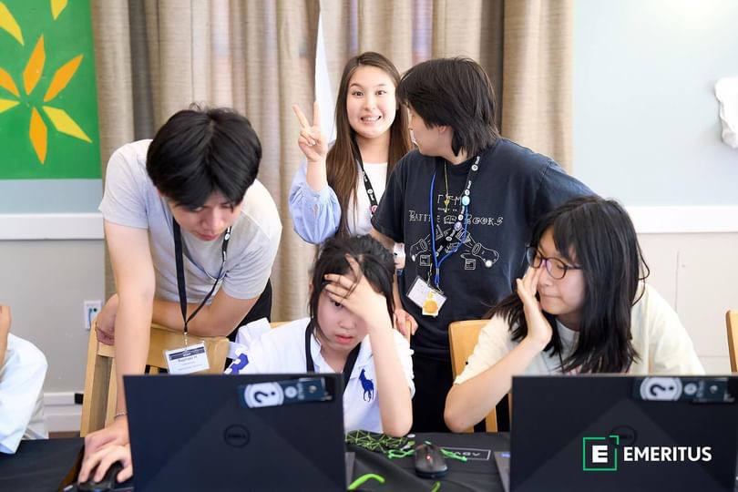
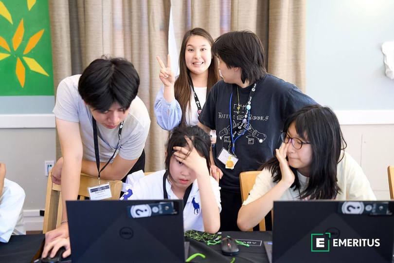

Internship at iD Tech at Stanford University
 


Responsibilities
Taught Python Coding 101, Intro to Python Coding & AI, and AI and Machine Learning to over 100 students at Stanford University and San Francisco State University, focusing on TensorFlow and OpenCV.
Mentored students in understanding fundamental concepts of machine learning, AI, and data science.
Guided students through AI project development, working on projects like AI Assistants and Chatbots.
Impact
Managed a disciplined learning environment on projects involving sign recognition and datasets.
Designed a project-based learning module that increased student engagement.
Created a comprehensive learning experience that inspired students to continue their exploration of data science and AI.
Tools and Frameworks Used
Python
Focused on learning libraries, such as NumPy, Matplotlib, Keras, Pandas and etc.
PyGame Library
Taught building interactive games and simulations, fostering a deeper understanding of Python concepts and engaging them in active learning.
TensorFlow
Focused on sign language recognition projects by enabling the development of deep learning models that can accurately detect and classify various hand gestures using computer vision techniques.
OpenAI
Students learned to create chatbots and AI assistants using OpenAI's models, leveraging advanced natural language processing capabilities to build interactive and responsive conversational agents.
OpenCV
OpenCV was used in these projects to process and analyze visual data, enabling features such as real-time hand gesture recognition and facial detection, enhancing the functionality of AI systems like sign language interpreters and interactive vision-based applications.
Teachable Machine
Taught intro on usage of Teachable Machine, which enabled students to create custom models for image, sound, and pose classification without extensive coding.